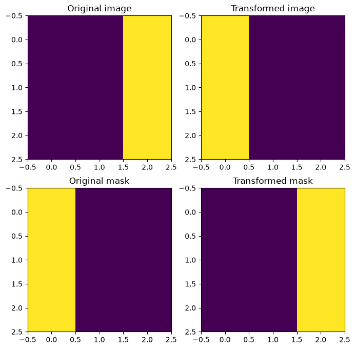
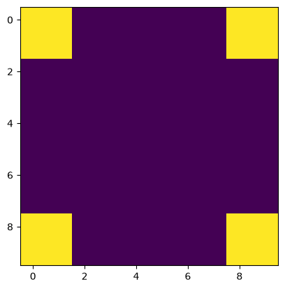
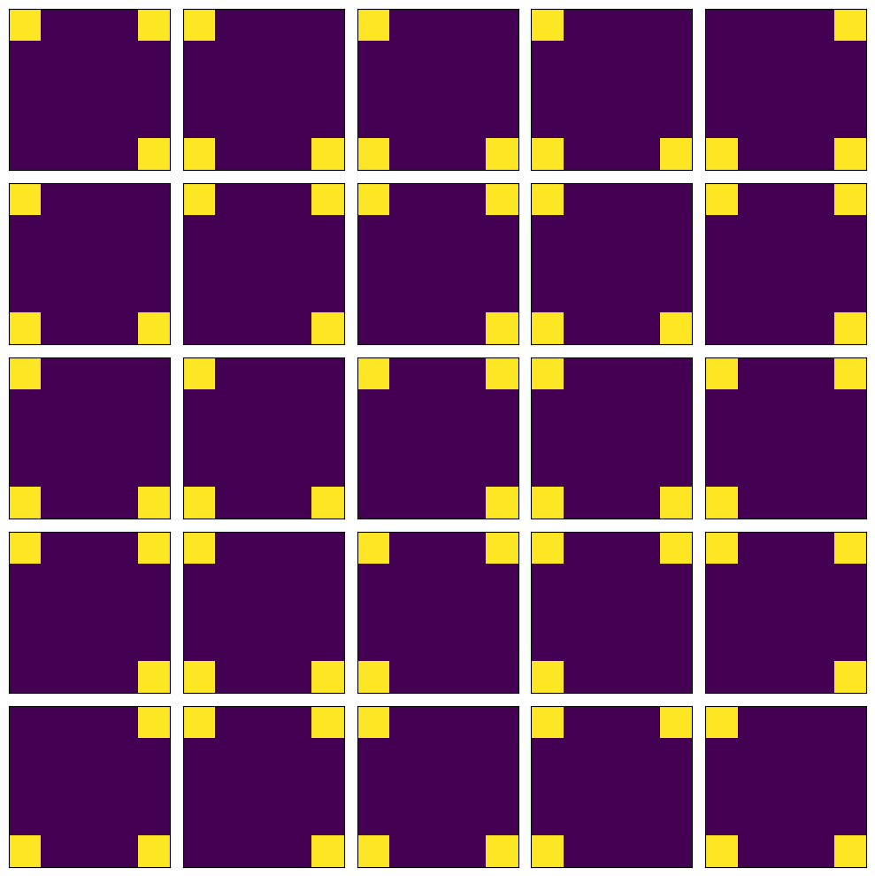
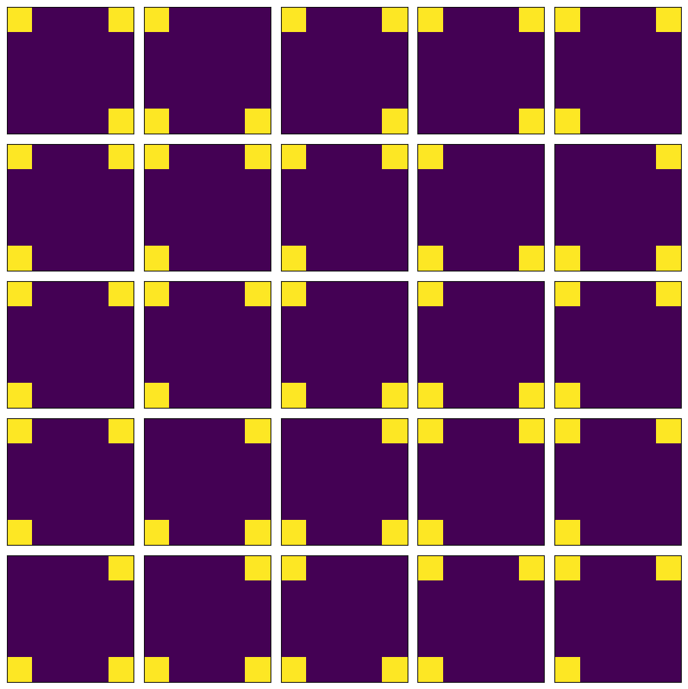

Basics of SOLT¶
In this short tutorial, you will get to know the core concepts behind the SOLT library and also learn how to implement simple data augmentations by yourself.
[1]:
%matplotlib inline
import numpy as np
import matplotlib.pyplot as plt
from matplotlib import patches
import cv2
import os
import glob
import json
np.random.seed(12345)
Solt has several main modules:
core- Data Streaming classes. Base classes and other core elementstransforms- Transformations (data augmentations)utils- Tools used in the librrary and also serialiation functionality
The naming convention is in the cell below:
[2]:
import solt.transforms as slt
import solt.core as slc
import solt.utils as slu
We note here that SOLT has a convenient flat API structure:
[3]:
import solt
list(filter(lambda x: not x.startswith('_'), dir(solt)))
[3]:
['BoundingBoxes',
'DataContainer',
'Keypoints',
'SelectiveStream',
'Stream',
'constants',
'core',
'from_dict',
'from_json',
'from_yaml',
'transforms',
'utils']
In the cell above, we can see that the classess DataContainer, Keypoints, Stream and SelectiveStream are available in solt. This is done for the convenience of the user. For example, instead of using solt.core.DataContainer, the user can use solt.DataContainer or solt.Stream instead of solt.core.Stream. Given this, we sugget to use the following naming convention for simplicity:
[4]:
import solt
import solt.transforms as slt
Wrapping the data into containers¶
While taking a look at the other libraries, we found one particular disadvantage: the transforms do not understand the data and one needs to implement some hacks to deal with it. The best library that has specialized containers for different datatypes is imgaug, however, it is very slow.
In SOLT, we created a DataContainer that wraps all your data into a single object. Furthermore, the DataContainer enables a possibility to apply the same transformation to multiple images (e.g. to a minibatch if images, an instance segmentation mask, a set of keypoints). What is needed is just the data and the specification whether it is an image (I), mask (M), keypoints (P), or labels (L). An example of creating the data container is given in the cell below:
[5]:
# Images must be in OpenCV format
test_img_1 = np.zeros((5, 5, 3), dtype=np.uint8)
dc = solt.DataContainer(test_img_1, 'I')
An alternative way of creating data containers is using a dictionary:
[6]:
dc_from_dict = solt.DataContainer.from_dict({'image': test_img_1})
[7]:
assert dc == dc_from_dict
When you have multiple data items, use tuple in DataContainer constructor. The number of elements in the tuple and the length of the format string must match:
[8]:
# Images must be in OpenCV format
test_img_2 = np.zeros((5, 5, 3), dtype=np.uint8)
test_img_3 = np.zeros((5, 5, 3), dtype=np.uint8)
dc = solt.DataContainer((test_img_1, test_img_2, test_img_3), 'III')
In this case, you can also use dict API:
[9]:
dc_from_dict = solt.DataContainer.from_dict({'images': [test_img_1, test_img_2, test_img_3]})
[10]:
assert dc == dc_from_dict
Handling the keypoints¶
We found some difficulties when working with the other libraries that support keypoints (landmarks). One solution was to create a dedicated container for keypoints, which stores the information about the coordinate frame where those keypoints are located:
[11]:
# Creating fake data
kpts_data = np.array([[0, 0], [0, 1], [1, 0], [2, 0]]).reshape((4, 2))
# Saying the the keypoints need to be within a rectangle HxW, where H=3, W=4 in this case
kpts = solt.Keypoints(kpts_data, 3, 4)
# Now we can wrap these keypoints into a Data Container:
dc = solt.DataContainer(kpts, 'P')
Please, note that there is no keypoint-specific dict API yet.
Applying SOLT transforms¶
In SOLT, we implemented a large variety of transformations. We recommend to always use a Stream to perform the data augmentations. Let us define a simple stream with only one transform - Flip. This transform will flip the data around the given axis:
[12]:
stream = solt.Stream([
slt.Flip(p=1, axis=1)
])
Creating the data¶
[13]:
# Plese, note that the image must always have a channel dimension
test_img_4 = np.array([[0, 0, 1],
[0, 0, 1],
[0, 0, 1]]).reshape(3, 3, 1)
# Masks, however, should have only two dimensions
test_mask_4 = np.array([[1, 0, 0],
[1, 0, 0],
[1, 0, 0]])
dc = solt.DataContainer((test_img_4, test_mask_4), 'IM')
Using Dict instead of a DataContainer (covers 99% of usecases)¶
By default, SOLT is designed to return torch tensors, normalize them, and subtract ImageNet mean. If we want SOLT to return a solt.DataContainer, we have to specify return_torch=False when calling the transforms:
[14]:
dc_res = stream({'image': test_img_4, 'mask': test_mask_4}, return_torch=False)
[15]:
assert isinstance(dc_res, solt.DataContainer)
Applying the transformations¶
Let’s continue using a previously created solt.DataContainer
[16]:
dc_res = stream(dc, return_torch=False)
We can get access to the data in the container as follows:
[17]:
img_res, mask_res = dc_res.data
The format can also be retrieved:
[18]:
dc_res.data_format
[18]:
'IM'
Visualizing the results¶
[19]:
fig, ax = plt.subplots(2, 2, figsize=(8, 8))
ax[0, 0].set_title('Original image')
ax[0, 0].imshow(test_img_4.squeeze())
ax[0, 1].set_title('Transformed image')
ax[0, 1].imshow(img_res.squeeze())
ax[1, 0].set_title('Original mask')
ax[1, 0].imshow(test_mask_4)
ax[1, 1].set_title('Transformed mask')
ax[1, 1].imshow(mask_res)
plt.show()

Serializing transforms into dict, yaml or json¶
We found serialization of the augmentation pipelines to be an important challenge when running experiements. In SOLT, we developed the API that allows you to conveniently serialize the whole transformation stream into dict, yaml or json:
[20]:
stream = solt.Stream([
slt.Flip(axis=1),
slt.Rotate(angle_range=(-90, 90)),
])
stream.to_dict() # this converts the pipeline into a dict
[20]:
{'shuffle': False,
'in_place': True,
'max_bbox_area_loss': 0.9,
'max_bbox_outside': 0.5,
'optimize_stack': False,
'interpolation': None,
'padding': None,
'ignore_fast_mode': False,
'transforms': [{'flip': {'p': 0.5, 'data_indices': None, 'axis': 1}},
{'rotate': {'p': 0.5,
'padding': ('z', 'inherit'),
'interpolation': ('bilinear', 'inherit'),
'ignore_fast_mode': False,
'ignore_state': True,
'angle_range': (-90, 90)}}]}
[21]:
print(stream.to_json()) # to json
{
"stream": {
"shuffle": false,
"in_place": true,
"max_bbox_area_loss": 0.9,
"max_bbox_outside": 0.5,
"optimize_stack": false,
"interpolation": null,
"padding": null,
"ignore_fast_mode": false,
"transforms": [
{
"flip": {
"p": 0.5,
"data_indices": null,
"axis": 1
}
},
{
"rotate": {
"p": 0.5,
"padding": [
"z",
"inherit"
],
"interpolation": [
"bilinear",
"inherit"
],
"ignore_fast_mode": false,
"ignore_state": true,
"angle_range": [
-90,
90
]
}
}
]
}
}
[22]:
print(stream.to_yaml())
stream:
ignore_fast_mode: false
in_place: true
interpolation: null
max_bbox_area_loss: 0.9
max_bbox_outside: 0.5
optimize_stack: false
padding: null
shuffle: false
transforms:
- flip:
axis: 1
data_indices: null
p: 0.5
- rotate:
angle_range:
- -90
- 90
ignore_fast_mode: false
ignore_state: true
interpolation:
- bilinear
- inherit
p: 0.5
padding:
- z
- inherit
Extending with own transforms¶
Let’s implement a simple transform that randomly zeroes one of the image corners. All transforms must be inherited from solt.core.ImageTransform or solt.core.BaseTransform. In this case, you do not need to worry about how to read and write the data from DataContainer, how to do serialization, etc. To fully understand the implementation details, please, follow the docstrings:
[23]:
class ImageCornerDropTransform(solt.core.ImageTransform):
serializable_name = 'corner_drop'
def __init__(self, corner_size=None, p=None, data_indices=None):
"""Transform, which simply drops one of the image corners.
Here is the order of corners used:
01
23
Because this transform is only for images, let's use a parent class `ImageTransform` from
the module `base_transforms`.
p : None or float
Probability of using this transform.
data_indicies : tuple or None
Indices within a data container where this transform need to be applied.
"""
super(ImageCornerDropTransform, self).__init__(p=p, data_indices=data_indices)
if corner_size is None:
corner_size = 0
self.corner_size = corner_size
def sample_transform(self, data):
"""This method samples the parameters of the transform.
Having called this method once we can easily apply the same transformation to
every item within a data container.
"""
super(ImageCornerDropTransform, self).sample_transform(data)
self.state_dict['corner'] = np.random.randint(0, 4)
def _apply_img(self, img, item_settings):
"""Applies a transform to an image.
Every transform has the following set of methods, which are applied autimatically, depending on the data:
_apply_img
_apply_mask
_apply_labels
_apply_pts
Because this particular transform is a subclass of ImageTransform, then we just need to define the behavior for images.
"""
img = img.copy()
s = self.corner_size
if self.state_dict['corner'] == 0:
img[:s, :s] = 0
elif self.state_dict['corner'] == 1:
img[:s, -s:] = 0
elif self.state_dict['corner'] == 2:
img[-s:, :s] = 0
elif self.state_dict['corner'] == 3:
img[-s:, -s:] = 0
return img
We are not going to write any tests or do parameter checks for the transform here. To learn how this can be done, please, see the source code or the contributing guidelines.
Once the transform is implemented, it can be used right away. Let’s create some data and apply this transform to it:
[24]:
test_img = np.zeros((10, 10, 1))
test_img[:2, :2] = 1
test_img[:2, -2:] = 1
test_img[-2:, :2] = 1
test_img[-2:, -2:] = 1
[25]:
plt.imshow(test_img.squeeze())
plt.show()

Applying transform to drop at least 1 corner:
[26]:
trf = slc.Stream([ImageCornerDropTransform(p=1, corner_size=2)])
fig, ax = plt.subplots(5, 5, figsize=(10, 10))
for row in range(5):
for col in range(5):
dc_res = trf({'image': test_img}, return_torch=False)
ax[row, col].imshow(dc_res.data[0].squeeze())
ax[row, col].set_xticks([])
ax[row, col].set_yticks([])
plt.tight_layout()
plt.show()

More details about serialization¶
SOLT is using a pattern registry for serialization. Whenever a transform is inherited from solt.core.BaseTransform or solt.core.Stream, it gets added to the registry that tracks all the available transformations. It is quite easy to see what is stored in the registry:
[27]:
slc.Stream.registry
[27]:
{'stream': solt.core._core.Stream,
'selective_stream': solt.core._core.SelectiveStream,
'rotate': solt.transforms._matrix.Rotate,
'rotate_90': solt.transforms._matrix.Rotate90,
'shear': solt.transforms._matrix.Shear,
'scale': solt.transforms._matrix.Scale,
'translate': solt.transforms._matrix.Translate,
'projection': solt.transforms._matrix.Projection,
'flip': solt.transforms._spatial.Flip,
'pad': solt.transforms._spatial.Pad,
'resize': solt.transforms._spatial.Resize,
'crop': solt.transforms._spatial.Crop,
'random_resized_crop': solt.transforms._spatial.RandomResizedCrop,
'gamma_correction': solt.transforms._intensity.GammaCorrection,
'contrast': solt.transforms._intensity.Contrast,
'hsv': solt.transforms._intensity.HSV,
'brightness': solt.transforms._intensity.Brightness,
'brightness_contrast': solt.transforms._intensity.BrightnessContrast,
'intensity_remap': solt.transforms._intensity.IntensityRemap,
'cvt_color': solt.transforms._intensity.CvtColor,
'noise': solt.transforms._noise.Noise,
'salt_and_pepper': solt.transforms._noise.SaltAndPepper,
'blur': solt.transforms._noise.Blur,
'keypoints_jitter': solt.transforms._noise.KeypointsJitter,
'jpeg_compression': solt.transforms._noise.JPEGCompression,
'cutout': solt.transforms._occlusion.CutOut,
'gridmask': solt.transforms._occlusion.GridMask,
'corner_drop': __main__.ImageCornerDropTransform}
It can be seen that corner_drop has been added to the registry, which means we can also deserialize it later:
[28]:
yaml_str = """
stream:
transforms:
- rotate_90:
k: 2
- corner_drop:
corner_size: 2
p: 1
"""
[29]:
deserialized = solt.from_yaml(yaml_str)
Let’s check how the deserialized transform works:
[30]:
fig, ax = plt.subplots(5, 5, figsize=(10, 10))
for row in range(5):
for col in range(5):
dc_res = deserialized({'image': test_img}, return_torch=False)
ax[row, col].imshow(dc_res.data[0].squeeze())
ax[row, col].set_xticks([])
ax[row, col].set_yticks([])
plt.tight_layout()
plt.show()

Summary¶
In this tutorial, we have overviewed the basics of SOLT and learned how to apply transformations to images. We have also learned how to serialize, deserialize and create own transforms.